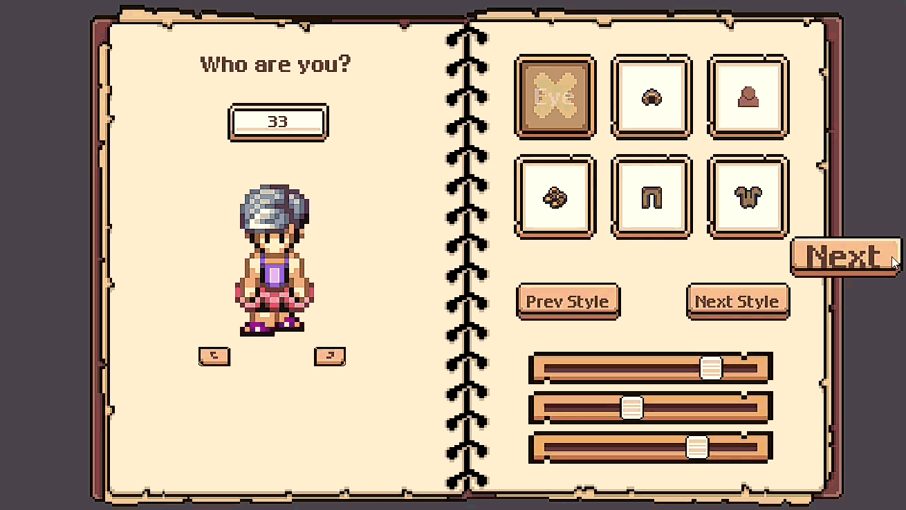
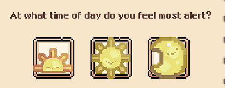
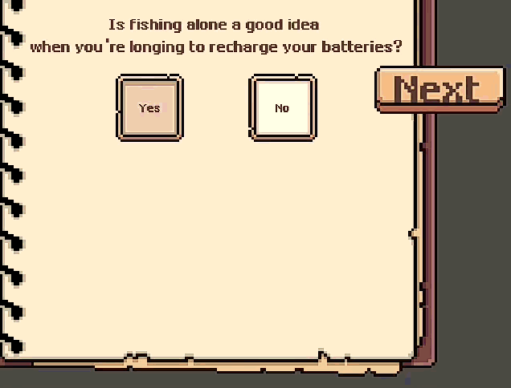
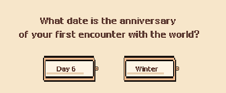
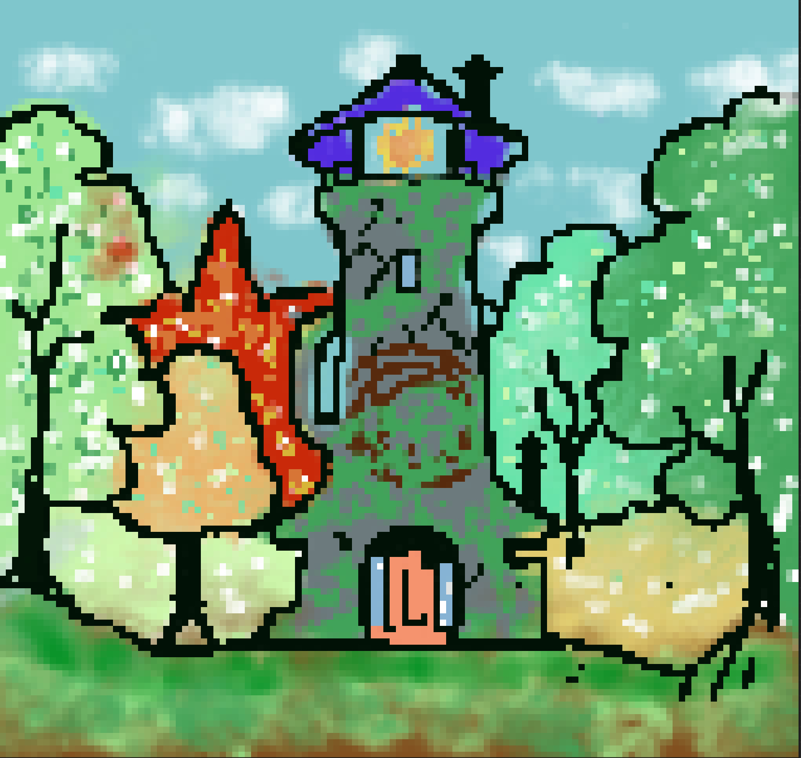
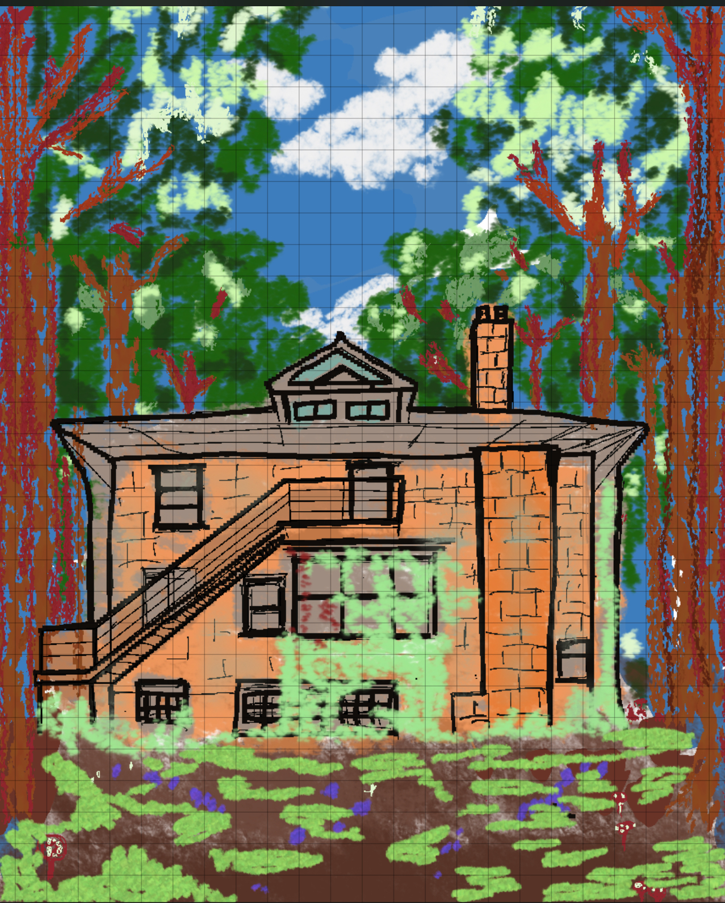

Devlog #2 : Bienvenue au "Lieu de naissance"
Bienvenue dans le devlog #2 de Back to Thawing Valley !
Ces dernières semaines, nous avons finalise un systeme cle : la creation de personnage multi-pages (PlayerSetup.tscn), pensee comme une vraie introduction a votre histoire dans la vallee.

Interaction principale
L'interface repond mieux aux choix du joueur, y compris pour les parcours plus solitaires.

Immersion et personnalite
Nous avons ajoute des questions de style de vie (rythme de sommeil, preferences, etc.) pour rendre la creation plus personnelle.



Direction artistique
En parallele du code, nous continuons les etudes visuelles et les tests d'ambiance.


Suite du developpement
Prochaine etape : lancer la boucle de gameplay de base avec les premieres actions de terrain et la plantation des premieres graines.